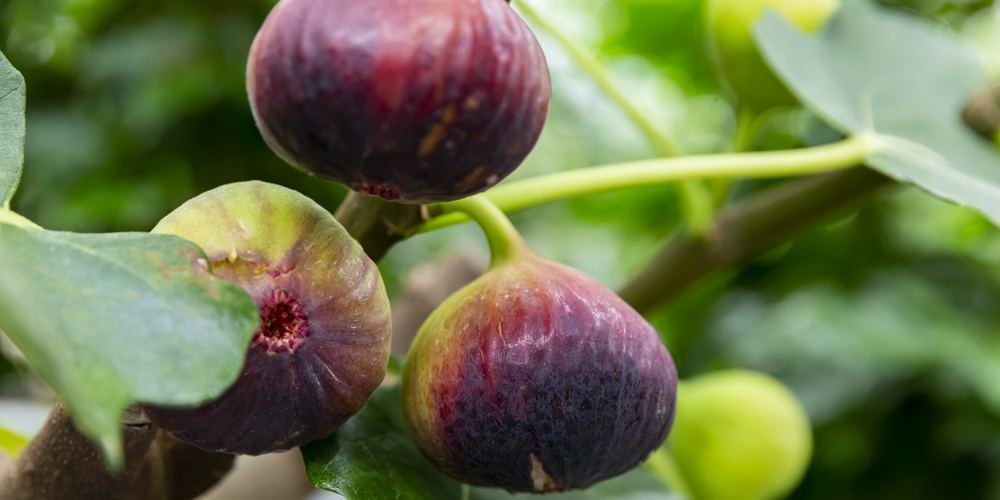
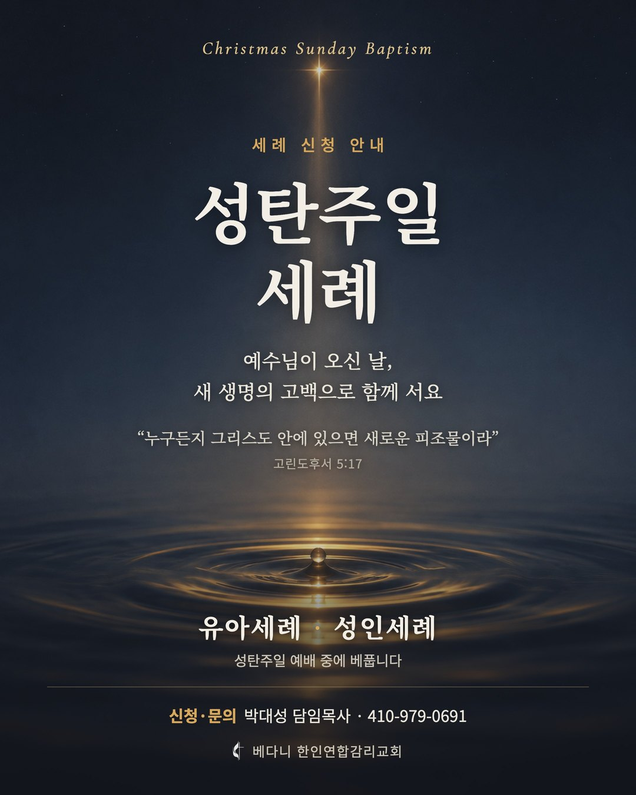

주일 이후
은혜를
기억하는 사람
“열 사람이 다 깨끗함을 받지 아니하였느냐
그 아홉은 어디 있느냐”누가복음 17:17
주일 이후
“열 사람이 다 깨끗함을 받지 아니하였느냐
그 아홉은 어디 있느냐”누가복음 17:17
이번 주 한 문장
“감사는 모든 것을 가진 사람의 고백이 아니라, 자신이 받은 은혜를 기억하는 사람의 고백입니다.”
박대성 목사 · 11월 22일 추수감사주일 설교 중에서
3분 요약
예루살렘으로 가시던 예수님께 열 명의 나병 환자가 멀리 서서 외쳤습니다. “예수 선생님이여 우리를 불쌍히 여기소서.” 병의 고통에 더해 가족과도 떨어져 살아야 했던 사람들입니다. “가서 제사장들에게 너희 몸을 보이라”는 말씀에 순종해 가다가 열 명 모두 깨끗해졌습니다. 그런데 돌아와 감사한 사람은 한 명뿐이었습니다. 추수감사주일, 얼마나 많이 얻었는지를 세는 대신 지금까지 붙들어 주신 은혜를 다시 기억했습니다.
그는 큰 소리로 하나님께 영광을 돌리며 예수님의 발 앞에 엎드렸습니다. 단순한 인사가 아니라 믿음의 고백이었습니다. 예수님은 물으십니다. “그 아홉은 어디 있느냐.” 은혜를 받은 사람은 열 명이었지만 기억하고 돌아온 사람은 한 명이었습니다. 오늘 우리는 어느 쪽입니까?
성경은 돌아온 사람이 유대인들과 오랜 갈등이 있던 사마리아 사람이었다고 특별히 밝힙니다. 하나님의 은혜는 사람을 가리지 않습니다. 중요한 것은 그 은혜를 믿음으로 받고 하나님께 영광을 돌리는 것입니다.
“하나님의 은혜는 우리 피부색, 어디 출신인지, 영어를 잘하는지 못하는지 전혀 상관하지 않습니다.”
지난주 화요일, 목사님은 요양원 예배를 마치고 한 성도님의 전화를 받고 다시 돌아가, 기도를 부탁하신 한 분을 위해 기도했습니다. 며칠은 더 계실 것 같았는데, 목사님이 나오고 15분, 20분 만에 세상을 떠나셨다는 소식을 들었습니다. 아침에 눈을 뜨는 것, 예배 자리에 나올 수 있는 것, 가족이 곁에 있는 것. 잃고 나서야 그 평범한 하루가 얼마나 큰 복이었는지 깨닫습니다.
감사하는 사람은 받은 것만 바라보는 사람이 아니라 그것을 주신 하나님을 기억하는 사람입니다. 받은 복만 보면 복이 줄 때 감사도 줄지만, 주신 분을 바라보면 형편이 달라져도 감사할 수 있습니다. 우리를 향한 하나님의 사랑은 변하지 않기 때문입니다.
“우리가 지금 당연하게 누리고 있는 것 가운데 사실 당연한 것은 하나도 없습니다.”

사랑하는 사람을 잃었는데, 병으로 고통받는데 감사가 쉽게 나올 수는 없습니다. 성경은 고통을 고통이 아닌 척하라고 하지 않습니다. 슬프면 울어도 되고, 힘들면 하나님께 힘들다고 말씀드려도 됩니다. 시편의 절반 이상이 탄식의 노래입니다. 다만 그 가운데서도 놓치지 말아야 할 것은 하나님께서 여전히 나와 함께하신다는 사실입니다.
계획한 일이 이루어지지 않았고 아직 응답받지 못한 기도가 있어도, 우리를 포기하지 않고 여기까지 인도하신 하나님께 지금 이 자리에서 감사할 수 있습니다.
“감사는 고통이 없다는 고백이 아니라, 그 고통 가운데서도 하나님께서 나와 함께하신다는 믿음의 고백입니다.”
목사님은 올 한 해 베다니에 주신 은혜도 돌아보았습니다. 노숙인분들께 매주 따뜻한 식사를 나누고, 여성 재소자 사역을 감당하고, 실버타운과 요양원의 어르신들을 섬기고, 다음 세대를 위한 영어 예배의 문이 열렸습니다. 보이는 곳과 보이지 않는 곳에서 묵묵히 섬긴 성도님들의 수고도 하나님이 주신 은혜입니다.
사마리아 사람은 돌아와 주님 발 앞에 엎드렸고, 예수님은 “일어나 가라 네 믿음이 너를 구원하였느니라” 하셨습니다. 감사는 마음에만 머물지 않고 예배와 삶으로 나타날 때 진짜 감사가 됩니다.
받은 은혜를 기억하고, 감사로 돌아오는 베다니설교를 마치며 드린 축원
오늘 우리가 그 한 사람처럼 주님께 돌아와 감사하기를,
그 감사가 교회 안에서만 끝나지 않고 우리의 가정과 이웃과 세상을 향한 사랑으로 이어지기를,
어떤 형편 속에서도 하나님의 은혜를 기억하며 감사하며 살아가는 성숙한 그리스도인들이 모두 되시기를 우리 주님의 이름으로 간절히 축원합니다. 아멘.
11월 22일 설교 마지막 축원
이번 주 한 걸음
가족도, 친구도, 오랫동안 연락하지 못했던 분도 좋습니다. 문자 한 줄, 전화 한 통이면 충분합니다.
교회는 볼티모어 노숙인분들을 위한 방한 용품(이불, 외투, 내의, 모자, 장갑, 캔 음식, 컵라면 등)과 노숙인 섬김 기금을 위한 ‘아나바다 장터’ 물품을 받고 있습니다. (11월 22일 주보)
1분으로 다시 보기
설교 속 장면을 짧게 담았습니다. 눌러서 보세요.
쇼츠가 마음에 닿으셨다면, 위의 “설교 다시 보기”에서 전체 말씀으로 이어 보세요.
이번 주 배울 찬양
가사가 함께 나오는 영상입니다. 미리 듣고 따라 불러 보세요.
주의 자녀로 산다는 것은 · GIFTED
작사·작곡 이오늘 · 가사 영상 5분 30초 · 유튜브에서 보기 · 라이브 버전
풀무불 앞에서도 “그렇게 하지 아니하실지라도”라고 고백한 다니엘의 세 친구처럼, 이 찬양은 불과 폭풍 가운데서도 가장 가까이 함께하시는 주님을 노래합니다. 하박국의 “없을지라도” 고백과 이어집니다.
교회 소식

성탄주일 예배 중에 유아세례와 성인세례를 베풉니다. 예수님을 나의 구주로 고백하고 세례를 받기 원하시는 분, 자녀의 유아세례를 원하시는 부모님은 박대성 담임목사님께 신청해 주세요.
교회로 전화하기 · 410-979-0691